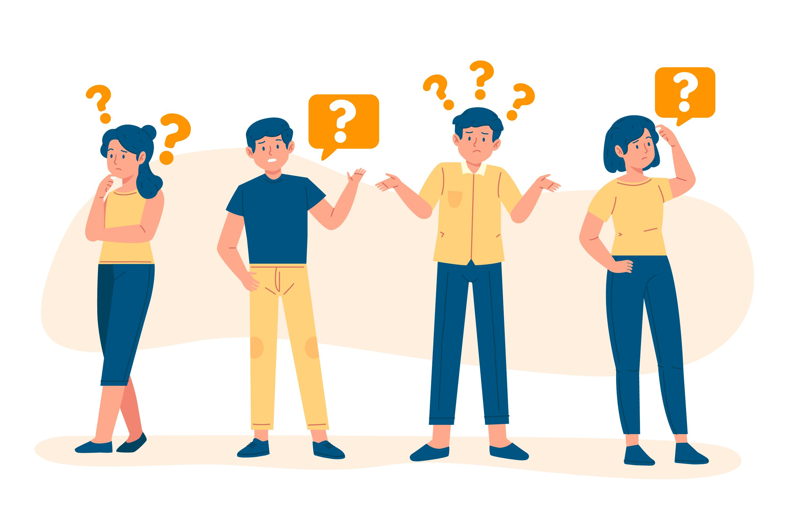

¿Que es?
Es un método para generar ideas innovadoras que centra su eficacia en entender y dar solución a las necesidades reales de los usuarios.
Es un método para generar ideas innovadoras que centra su eficacia en entender y dar solución a las necesidades reales de los usuarios.

Se desarrolla siguiendo un proceso en el que se ponen en valor los que se consideran sus 5 características diferenciales:
El proceso de Design Thinking se compone de cinco etapas. No es lineal. En cualquier momento podrás ir hacia atrás o hacia delante si lo ves oportuno, saltando incluso a etapas no consecutivas. Comenzarás recolectando mucha información, generando una gran cantidad de contenido, que crecerá o disminuirá dependiendo de la fase en la que te encuentres.
El proceso de Design Thinking comienza con una profunda comprensión de las necesidades de los usuarios implicados en la solución que estemos desarrollando, y también de su entorno